01 · Take the quizWelcome back
Making a big move to Florida? Find the beach town that fits your life.
Here are your top 5 towns.
Then get to know the towns that fit.
167 beach towns on one map, scored on what matters to you.
Explore the map →Want to weigh it yourself?
Try our Slider Map instead →
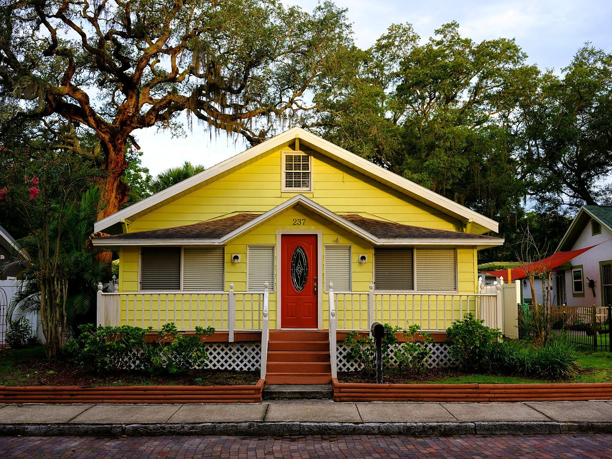
Old FloridaForgotten CoastOyster boats, brick storefronts · about $300K to $385K
What should home feel like?
All 12 styles →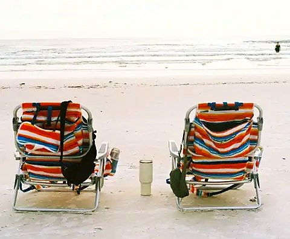
27 townsBest BeachesNationally ranked sand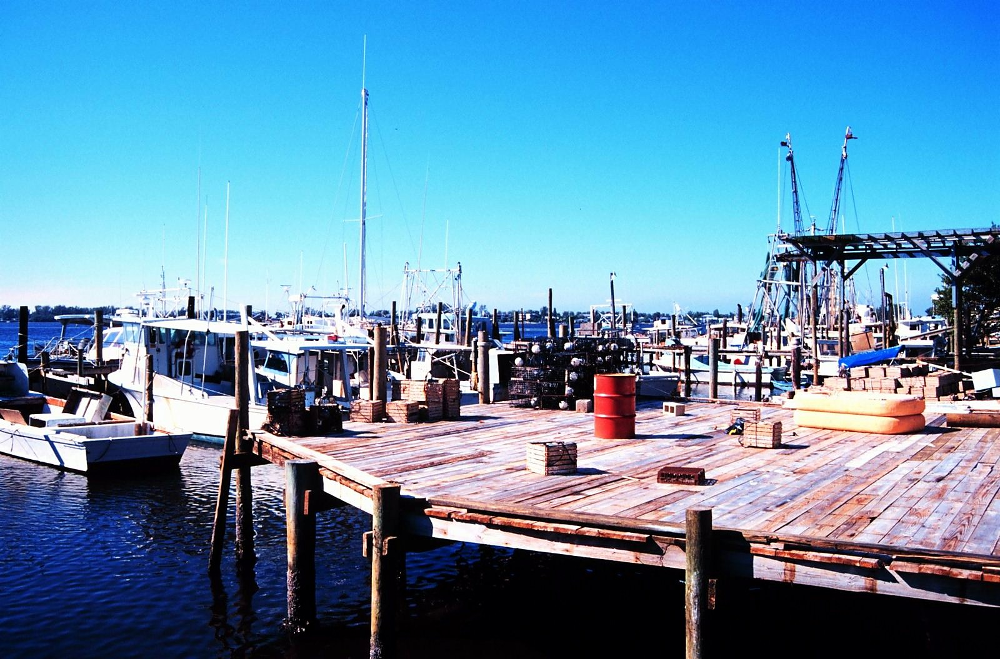
20 townsOld FloridaFish houses, bait shops and no hurry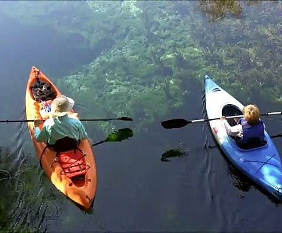
13 townsBlue ZoneSprings, parks and long walks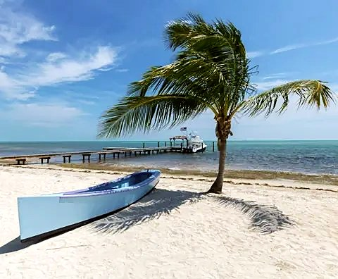
15 townsIsland LifeBarefoot, small and slow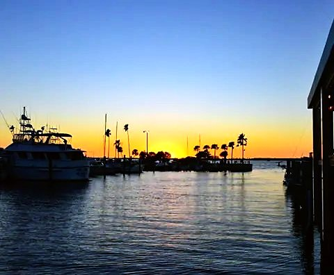
70 townsDock of the BayLife on and around the water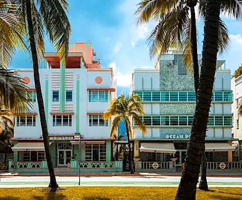
10 townsHigh EnergyPolished with a pulseSee the towns others are choosing.
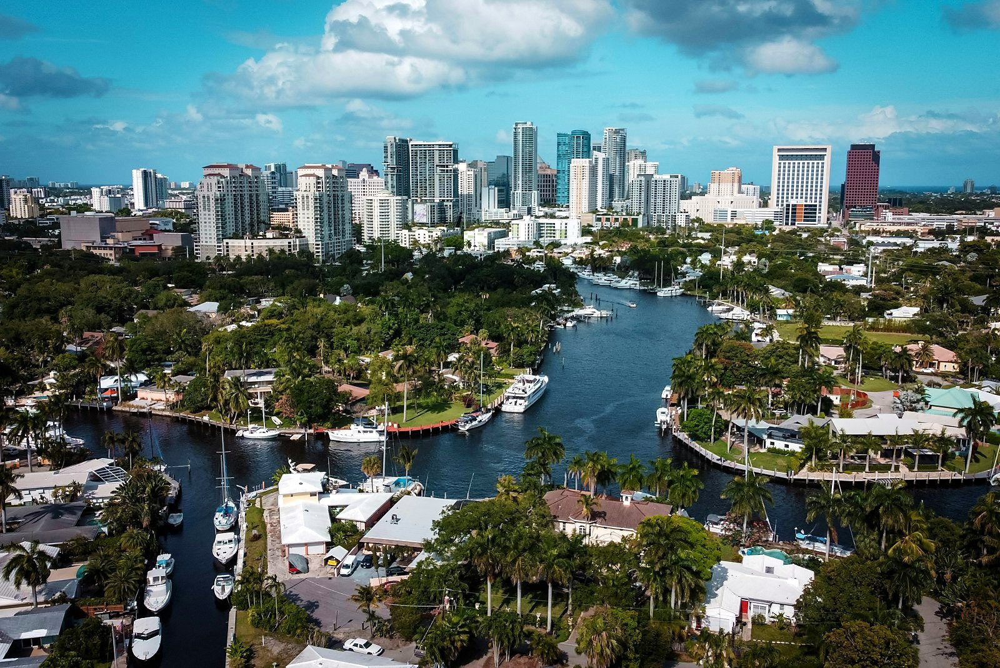
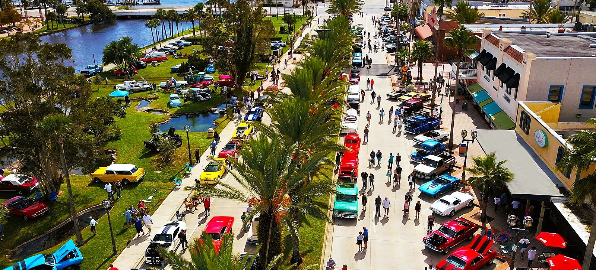
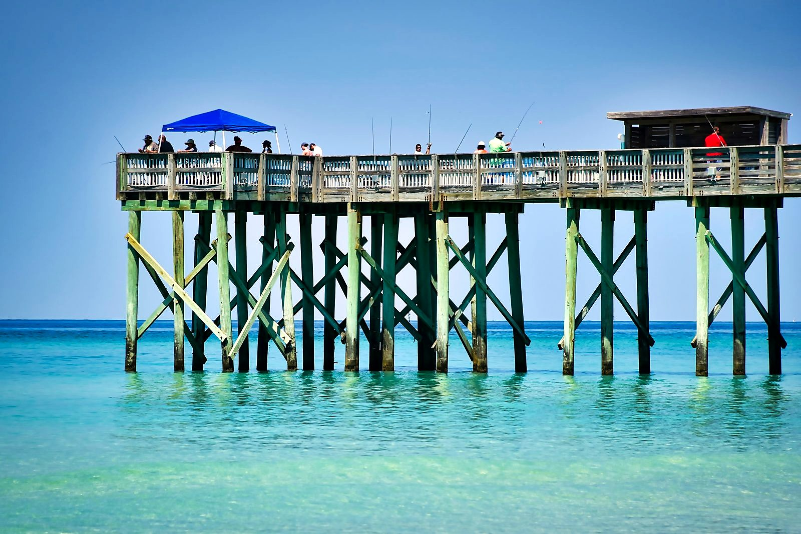
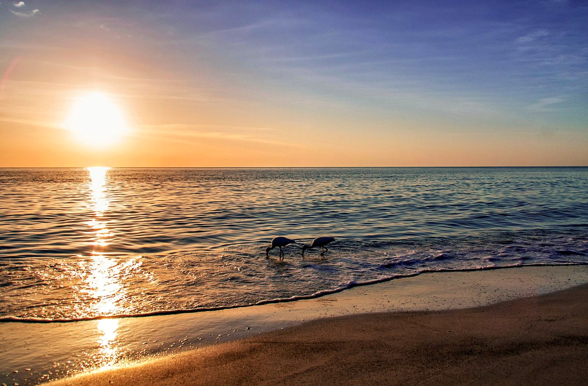
Ranks are among all U.S. cities: U-Haul Growth Index 2025 and PODS 2026 Moving Trends Report.
We only had two weeks to pick our Florida town.
By Mark and Betsy Scott
In 2005 we had two weeks to choose where to retire and raise three young kids. Twenty years and our share of hurricanes later, we built the guide we wished we'd had.
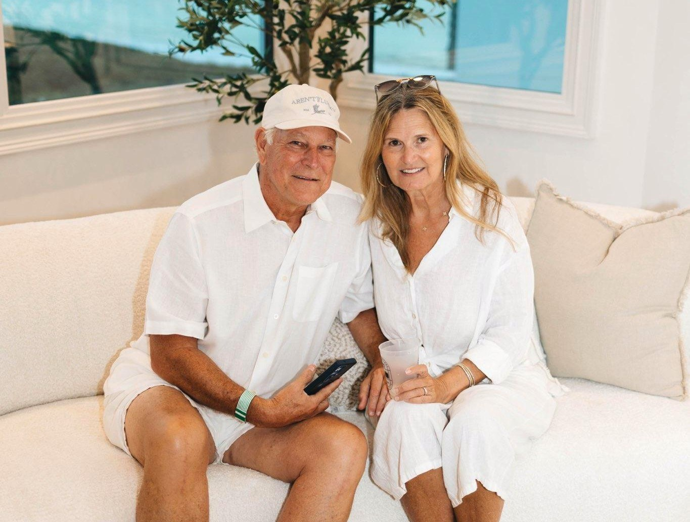
Meet a local when you're ready.
We're Mark and Betsy Scott. Mark was born in Fort Lauderdale, Betsy has been coming to southwest Florida since the 1970s, and today we live on a coastal dune lake on 30A.
Send us your top 5 and ask us anything. We'll give you the honest answer. When you want to see a town in person, someone who lives there shows you around. No pressure.
Read what we'd tell a friend.
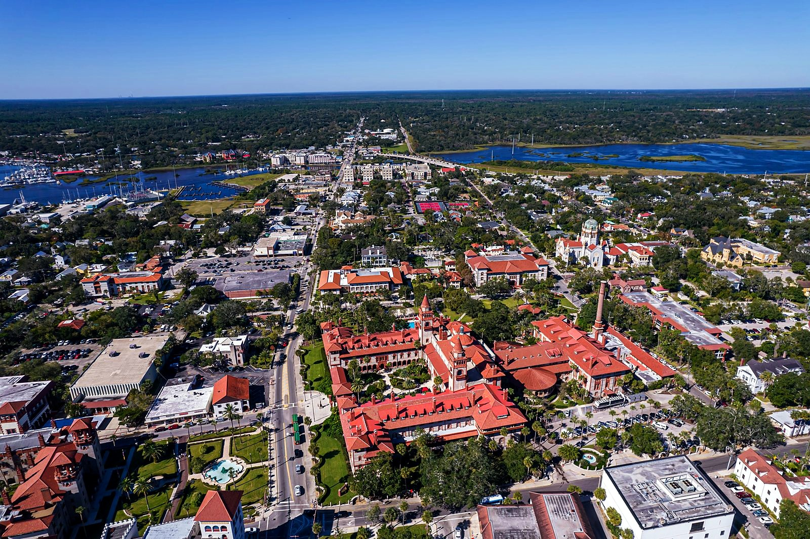
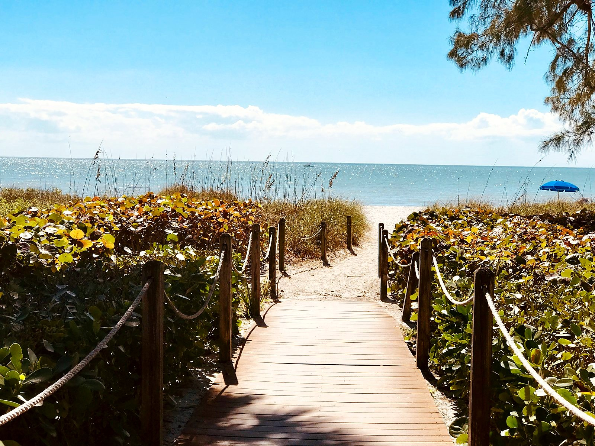
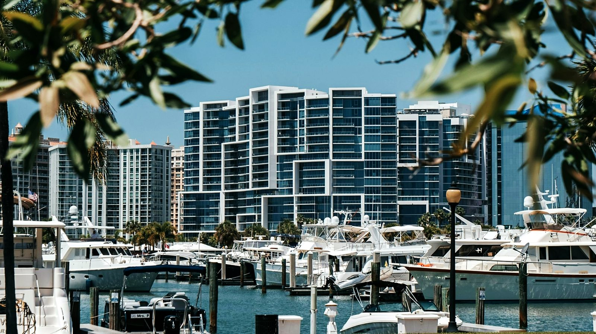
Not ready to move yet? Most people aren't.
Get our free Move and Belong Guide now: how to go from new in town to knowing people in your first 90 days. Plus one short letter a month about the coast.
Unsubscribe anytime.